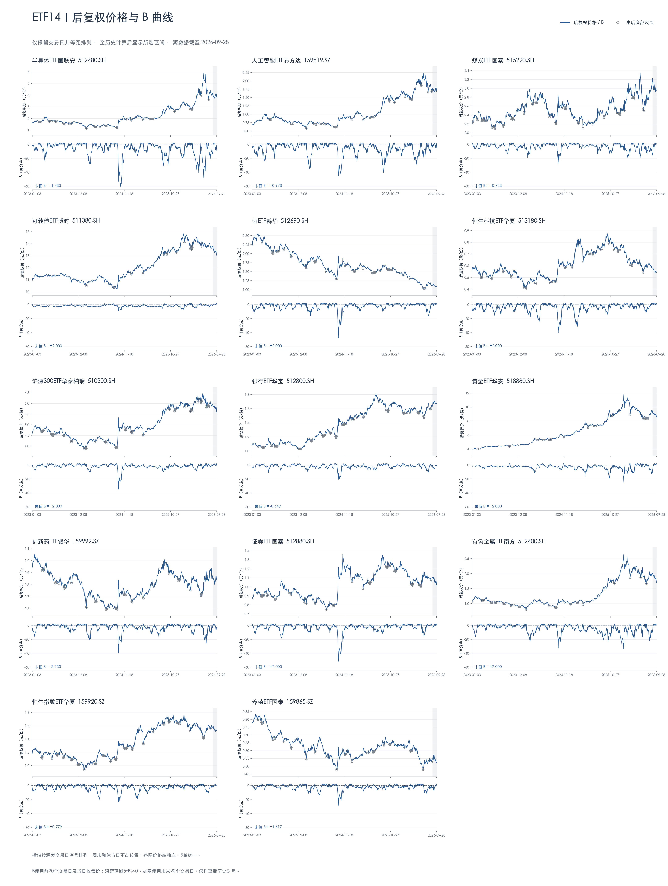

14只ETF · B策略趋势
数据截至2026-09-28 · 后复权收盘价 · 横轴仅交易日
图表缩放下载 PNG ↓


点击缩放按钮后可滚动查看细节；手机上也可打开原图，用双指放大。
01 / ETF B STRATEGY
后复权价格与B曲线，保留原有14只ETF和交易日横轴。
数据截至2026-09-28 · 后复权收盘价 · 横轴仅交易日

点击缩放按钮后可滚动查看细节；手机上也可打开原图，用双指放大。
512480.SH159819.SZ515220.SH511380.SH512690.SH513180.SH510300.SH512800.SH518880.SH159992.SZ512880.SH512400.SH159920.SZ159865.SZ